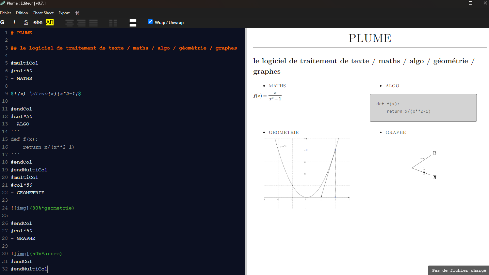

Le traitement de texte / math / algo / géométrie / graphes
Chers amis des mathématiques :
vous êtes professeur de mathématiques ou peut-être étudiant
vous en avez assez de taper vos formules de maths sous Word, y-a-t'il vraiment besoin de préciser pourquoi ?
vous n'êtes pas forcément fan de LaTeX, car trop lourd, trop de préambules, trop de bibliothèques à installer, la compilation c'est une perte de temps ?
Vous essayez de taper du code Python, mais vos indentations ne sont jamais comme vous le souhaitez ?
Vous voulez taper le corrigé d'un devoir de probabilité mais vous passez 30 minutes à dessiner un arbre sur paint ?
Alors essayez Plume !

C'est l'éditeur de cours de maths que j'aurais aimé avoir quand j'ai commencé à enseigner...
 Un exemple à télécharger, qui vous expliquera globalement à peu près tout.
Un exemple à télécharger, qui vous expliquera globalement à peu près tout.